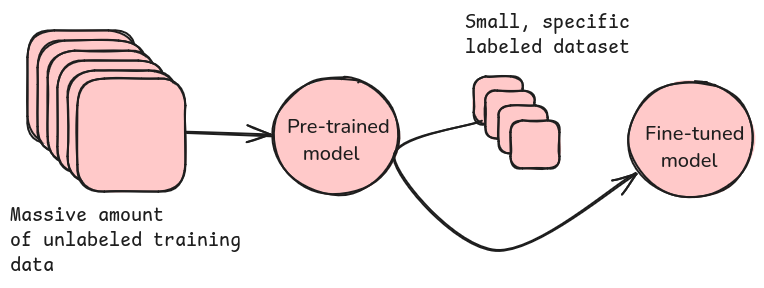
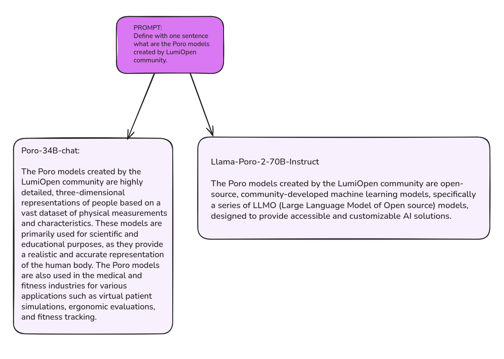

1. Large Language Models (LLMs)#
What are large language models?#
LLMs are AI systems that use deep learning algorithms to process and generate human-like text. From chatbots to automatic translation and content creation, LLMs are revolutionizing how we interact with technology. They function by receiving an input (prompt), for which they iteratively predict the most probable next words and thus produce a continuation of the prompt in natural language. Fine-tuned chat models are optimized to produce responses that align with user requests. Generation proceeds until the model emits a stop token or reaches a predetermined length limit. These models have been trained to predict the next words in a sentence based on massive amounts of training data, enabling them to generate coherent and contextually relevant responses.
Key capabilities of LLMs:
Text prediction: Generating coherent text based on input.
Summarization: Condensing long documents into concise summaries.
Translation: Converting text between languages.
Content generation: Writing articles, stories or even code.
Training phases#
Training an LLM is a two-step process: pre-training and fine-tuning. Both phases are essential for building an effective model that can understand and generate human-like text.
The image below illustrates the high-level data flow in LLM training phases.

Pre-training: learning patterns from data#
During the self-supervised pre-training phase, LLMs analyze massive amounts of text to recognize linguistic patterns. The training data typically comes from diverse sources such as websites, online books, research papers, and code repositories. The resulting pre-trained models can generate text completions but lack fine-grained task awareness. Pre-training datasets often lack domain-specific knowledge, requiring further refinement. Sometimes pre-trained models can be difficult to use and produce harmful outputs. Pre-trained models reflect the data they are trained on, meaning they may contain biases or produce unexpected outputs. Since pre-training covers general language patterns rather than specific tasks, additional fine-tuning is often required to align the model with real-world applications and ethical considerations.
Note: Pre-trained models are sometimes referred to as ‘base models.’ However, ‘pre-trained model’ is sometimes used to mean an instruction-tuned model, which is then further fine-tuned with domain-specific data.
Fine-tuning: adapting to specific tasks#
Fine-tuning is a set of techniques used to modify a pre-trained model to improve its performance on specific tasks. This involves training the model on specialized datasets to refine its responses.
Types of fine-tuning:
Instruction-tuning: The model is trained with input-output pairs to follow specific instructions, often enhanced with Reinforcement Learning from Human Feedback (RLHF) to improve its ability to understand and respond to prompts effectively.
Chat-tuning: Fine-tuning the model to perform well in conversational contexts, improving its ability to engage in natural, coherent dialogue.
Reinforcement Learning from Human Feedback (RLHF): Improves responses based on human evaluations, refining the model’s behavior and reducing harmful or biased outputs.
Task-specific tuning: Adapting models for applications like question-answering, summarization, and sentiment analysis.
For those interested in practical examples of fine-tuning, a Git repository is available, offering scripts for LLM fine-tuning on Puhti, Mahti, or LUMI.
Pre-training vs. Fine-tuning#
Feature |
Pre-training |
Fine-tuning |
|---|---|---|
Purpose |
Learning general language patterns |
Adapting to specific tasks |
Training data |
Massive, diverse text datasets |
Task-specific datasets |
Result |
Base model with broad understanding |
Improved performance for targeted applications |
Evaluation after training#
Evaluating an LLM is essential to ensure it produces accurate, reliable, and unbiased results. While there are many ways to assess a model’s performance, this course does not dive deeply into evaluation methods. Instead, we focus on how to use LLMs effectively in practical applications.
For those interested in learning more, there are many resources available on model evaluation techniques, such as accuracy testing, bias detection, and human feedback assessment. For further reading, see this “LLM Evaluation guidebook” hosted by Hugging Face.
Understanding opensource LLMs#
Many LLMs are available as open-source models, each with different licenses and capabilities.
Hugging Face is a platform where researchers and developers share open-source LLMs, fine-tuned models and datasets. Users can browse the Model Hub to find models suited for various tasks and run them eg. locally with tools like the transformers library. Developers can also easily integrate and fine-tune these models for specific applications.
Model performance depends on several key factors:
Training data:
The dataset quality directly impacts accuracy, biases, and domain knowledge.
Optimization for applications:
Some models are fine-tuned for tasks like summarization, translation, or chatbot interactions.
Model size & parameters:
More parameters typically improve coherence and contextual understanding.
Larger models require higher computational resources, increasing memory demands and processing costs.
Techniques such as reduced floating point precision (e.g., using bfloat16 instead of float32) and quantization can reduce model size and computational requirements without decreasing the number of parameters.
Additionally, it’s important to note that each model has a defined context length, which is the maximum number of tokens it can process at once. This limitation can impact the model’s ability to generate coherent responses. Models with shorter context lengths may struggle with longer inputs, which could result in truncated responses or loss of context.
Since an LLM is only as good as its training data, it’s essential to review which datasets were used in its development. Understanding a model’s architecture, dataset composition, and licensing can help determine its suitability for specific applications.
Example: Poro - A family of open models#
The Poro models are developed by Finnish institutions and Silo AI. The name ‘Poro’ comes from the Finnish word for reindeer. First models - Poro-34B- were released in 2023 and the latest - Poro 2 in 2025. Read more about developing the Poro 2 models here.
You can view all the models released under the LumiOpen community on Hugging Face. The community name likely reflects the use of the LUMI supercomputer in training these models.
There are both base models and chat-tuned models in the Poro family. The table below highlights key examples:
Model |
Features |
|---|---|
Poro-34B |
A foundational GPT (Generative pre-trained transformer) model trained on diverse datasets. |
Poro-34B-chat |
A fine-tuned version optimized for conversational AI, capable of answering questions, following instructions, and generating high-quality translations. |
Llama-Poro-2-8B-base |
A decoder-only transformer created through continued pretraining of Llama 3.1 8B to add Finnish language capabilities. |
Llama-Poro-2-8B-Instruct |
An instruction-following chatbot model created through supervised fine-tuning (SFT) and Direct Preference Optimization (DPO) of the Poro 2 8B Base model. |
Llama-Poro-2-70B-base |
A decoder-only transformer created through continued pretraining of Llama 3.1 70B to add Finnish language capabilities. |
Llama-Poro-2-70B-Instruct |
An instruction-following chatbot model created through supervised fine-tuning (SFT) and Direct Preference Optimization (DPO) of the Poro 2 70B Base model. |
Currently available through Aitta:
Example interactions with Poro-chat-models:#
The images below shows responses from two models - LumiOpen/Poro-34B-Chat and the LumiOpen/Llama-Poro-2-70B-Instruct - to the same input prompt.
Default settings were used (e.g., the max_completion_tokens parameter was not modified).
Take a look — what do you thinks about these answers?

While LLM responses are not always factually accurate, LLMs are still powerful tools for various tasks. They can generate text, summarize information, assist with coding, translate languages and much more. The key is to understand their limitations and verify critical information when needed.
Conclusion#
LLMs are powerful AI tools, but their effectiveness depends on the quality of their training data, fine-tuning techniques and hardware capabilities. As one of the European AI Factories LUMI AI Factory (LAIF) is working on improving access to training datasets and expanding accessibility to open-source AI models, helping to accelerate LLM development. One of the tools LAIF provides is the AI inference platform Aitta. Before we dive into Aitta, let’s explore inference — how trained models generate responses efficiently and accurately in real-world applications.
You can move on to Inference - Using Trained LLMs.